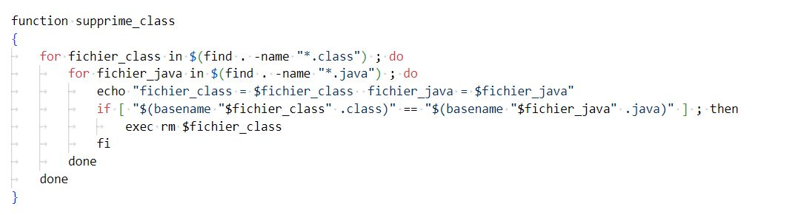
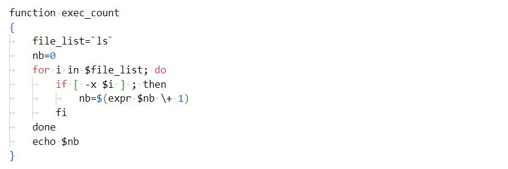
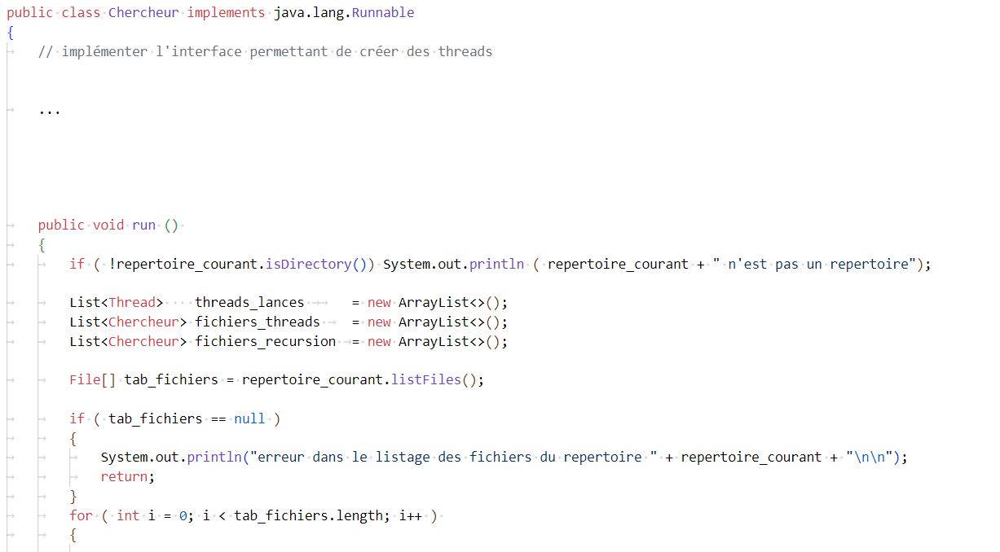
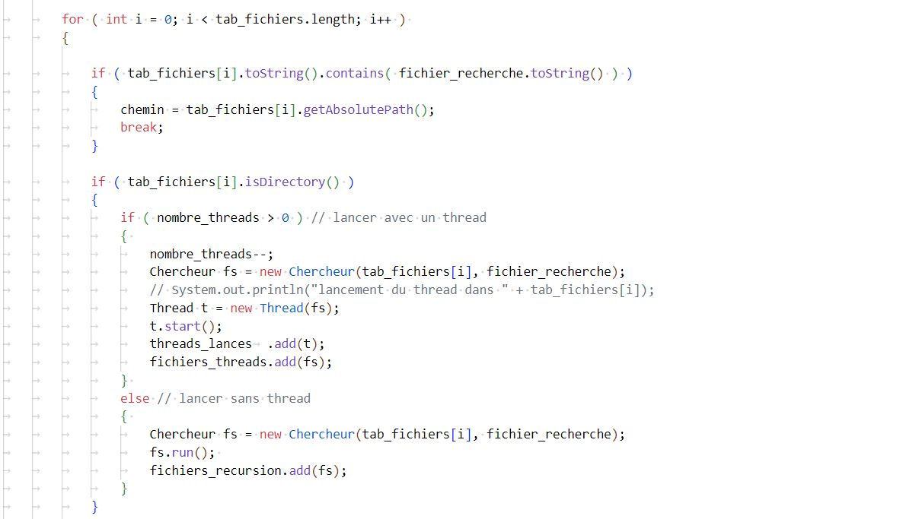
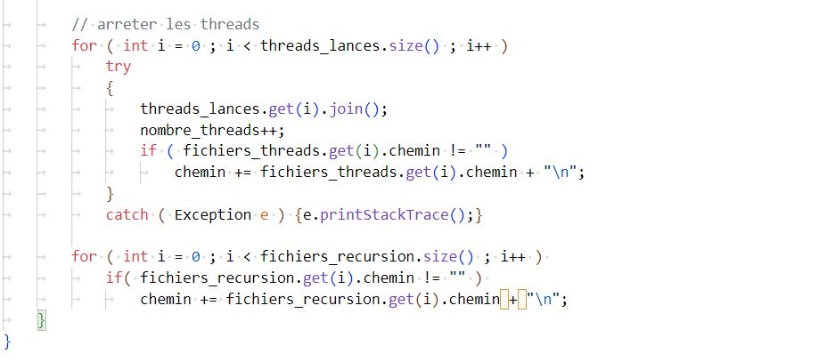

Identifier les différents composants (matériels et logiciels) d’un système numérique
Utiliser les fonctionnalités de base d’un système multitâches / multiutilisateurs
Installer et configurer un système d’exploitation et des outils de développement
Configurer un poste de travail dans un réseau d’entreprise
Projets
Commandes système et scripts
Threads
SAE 1.03 - Mise en place d'une machine virtuelle
SAE 2.03 - Site web dynamique WilovGym
Suivant →
Projet 1 : Commandes système et scripts
Présentation du projet :
J'ai eu l'occasion d'apprendre plusieurs commandes systèmes et d'appréhender la logique derrière bash.
J'ai d'abord appris à coder directement dans le terminal. Puis, j'ai ensuite appris à coder dans un script, afin de l'executer.
Via un script, j'ai par exemple crée mes propres fonctions.
Le fait d'avoir fait quelques petits projets reprennant commandes systèmes, les scripts... me permet de me rendre à l'aise avec l'utilsation de bash.
Bash est nécessaire pour utiliser d'autres languages de programmation (compilation, execution, entrées / sorties...), c'est pourquoi j'ai dévelloppé mes connaissances en systèmes.
← Précédent
Suivant →
Projet 2 : Découverte des Threads en Java
Présentation du projet :
J'ai eu l'occasion, au cours de l'année, d'apprendre l'utilisation des threads en java.
Les threads en java sont plutot simples à coder quand on compare au language C.
J'ai appris à utiliser la classe Thread ainsi que l'interface java.lang.Runnable.
Lors de m'on apprentissage, j'ai dévelloppé plusieurs projets qui utilisent pleinnement les ressources de ma machine.
← Précédent
Suivant →
Projet 3 : SAE 1.03 - Mise en place d'une machine virtuelle
Présentation du projet :
TODO
← Précédent
Suivant →
Projet 4 : SAE 2.03 - Site web dynamique WilovGym
Présentation du projet :
Lors du second semestre, nous avons eu l'occasion de travailler par groupes de 3 dans la conception d'un site web dynamique.
Nous avons choisi de créer
← Précédent
Suivant →
1. : Identifier les différents composants (matériels et logiciels) d’un système numérique
Lors de mon utilisation de bash, j'ai regulièrement utilisé ces raccourcis claviers :
Ctrl+C : interruption
Ctrl+Z : suspension ; fg (relance au premier-plan) ; bg (relance en arrière-plan)
Ctrl+S : désactive la mise à jour de l'ecran
Ctrl+Q : active la mise à jour de l'ecran
Ctrl+D : ferme le terminal
Ctrl+U : effaces la ligne actuelle
J'ai ensuite appris ces commandes qui m'ont permis de retrouver facilement un fichier dans mon ordinateur :
whereis nom_de_fichier
find start_point -name nom_de_fichier <-print>
Une fois le fichier trouvé, j'ai pu l'afficher avec la commande cat nom_de_fichier .
Je peux également trouver un caractère dans ce fichier avec un pipe et la commande grep . Par exemple, si je veux rechercher toutes les occurences du mot 'bonjour',
je peux utiliser cette commande : cat nom_de_fichier | grep bonjour.
J'ai appris à utiliser les scripts pour effectuer des tâches sur mon ordinateurs. Voici deux exemples :

fonction qui supprime les fichiers .class seulement si le .java existe

fonction qui compte le nombre de fichiers executables
← Précédent
Suivant →
2. : Utiliser les fonctionnalités de base d’un système multitâches / multiutilisateurs
Utilisation des threads
L'utilisation d'un thread est rendu possible par plusieurs acteurs :
Le système d'exploitation : mon système d'exploitation est Windows. Windows permet à ses utilisateurs de créer des threads.
Le processeur (CPU) : J'ai un processeur multi-coeurs (physiques ou virtuels), c'est à dire qu'il peut parralléliser et effectuer plusieurs tâches à la fois.
La mémoire : la gestion efficace de la memoire par le système d'exploitation permet à chaque thread d'avoir la mémoire nécessaire à son execution.
Les bibliothèques et les outils de développement : Classe Thread et/ou interface java.lang.Runnable ici. L'année prochaine, nous utiliseront la bibliothèque pthread en C.

Première partie du code

Deuxième partie du code

Troisième partie du code
← Précédent
Suivant →
3. : Installer et configurer un système d’exploitation et des outils de développement
TODO
← Précédent
Suivant →
4. : Configurer un poste de travail dans un réseau d’entreprise